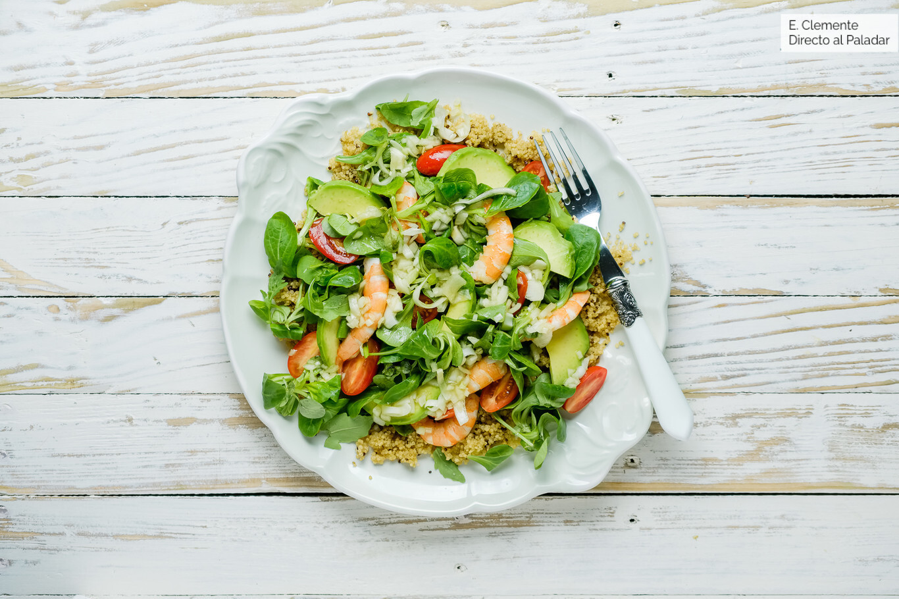
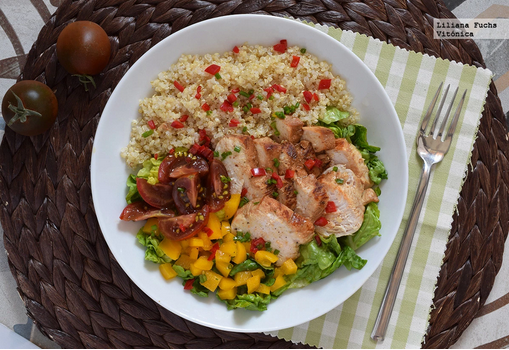
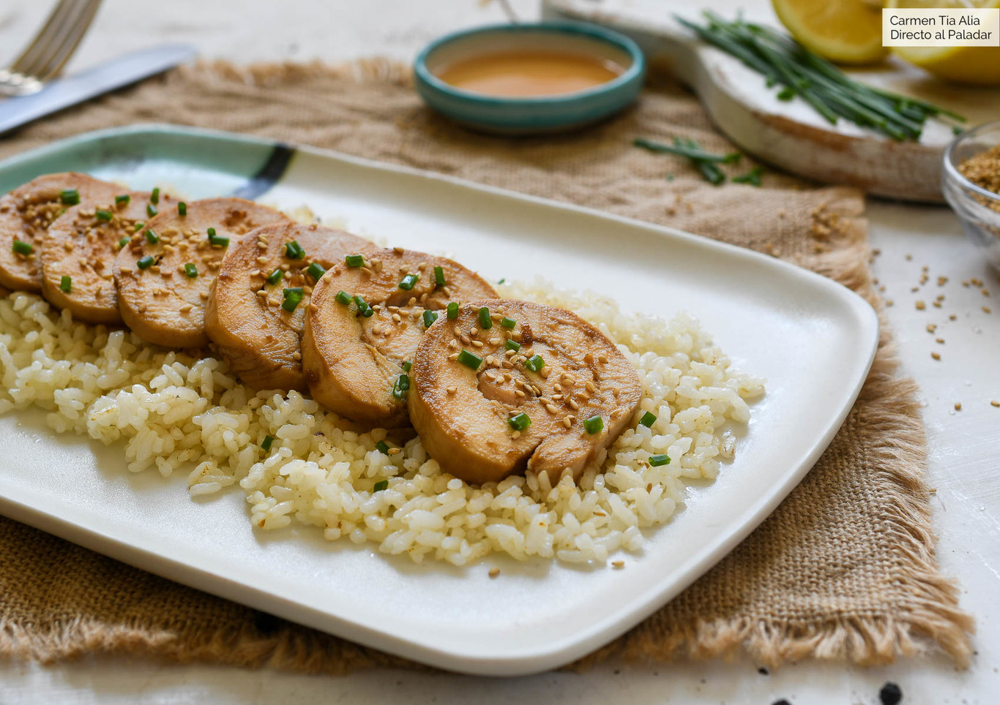
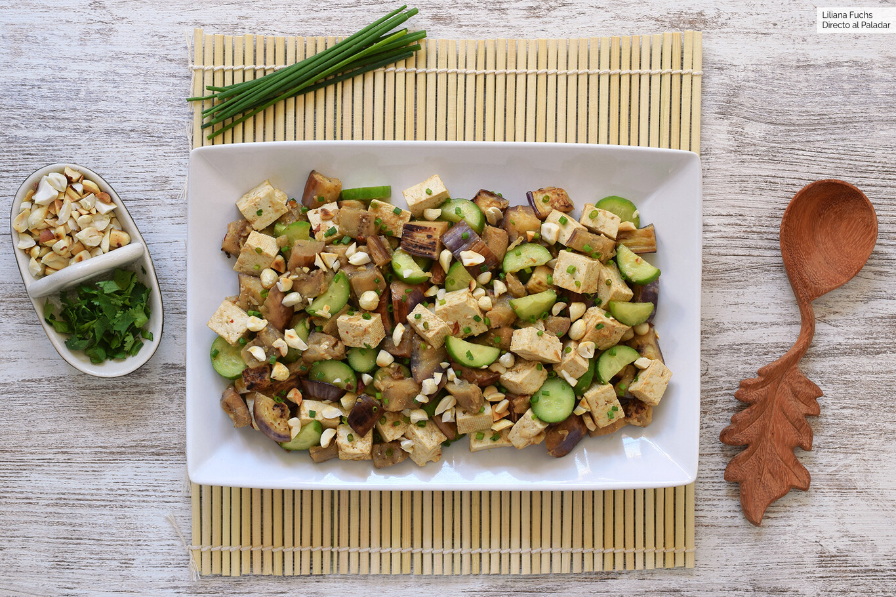
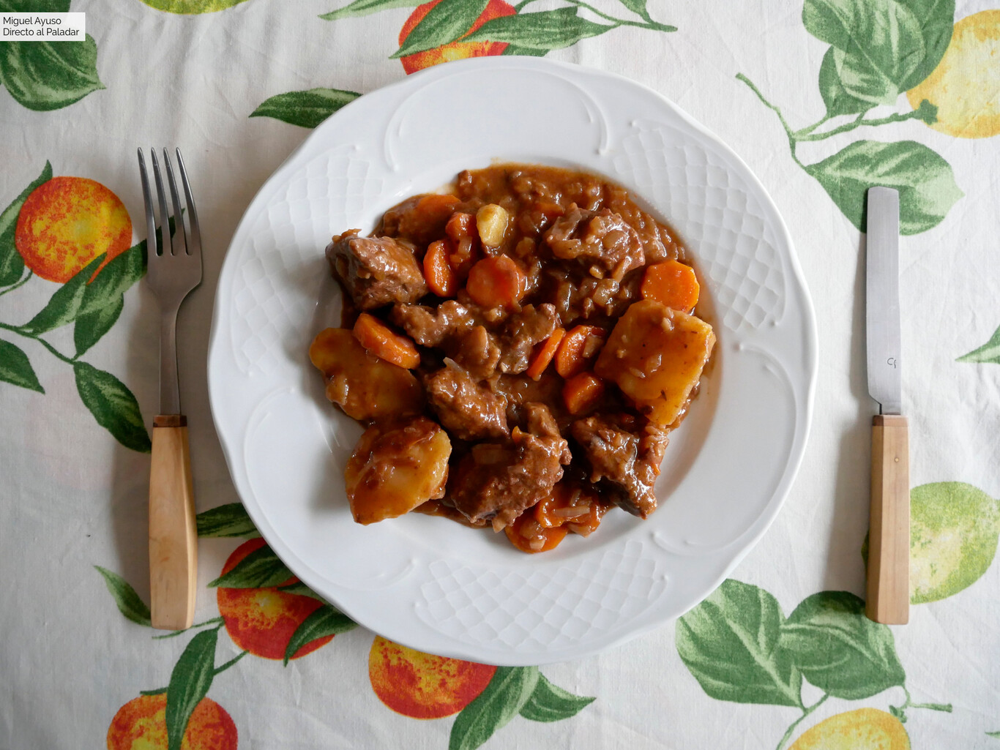

Mi comida saludable
SaluVeggie es un emprendimiento que comenzo en el 2015,
que se encuentra en expansión. Dedicada a la cocción de comidas
saludables de todo tipo para mantener el cuerpo saludable. Cada
comida es elaborada con las calorías y condimentos justos para
una buena sazón sin afectar nuestro organismo interno. Desde el 2021
incorporamos eventos virtuales para enseñar sobre comida y catering
presencial para conferencias.
| Lunes | Martes | Miercoles | Jueves | Viernes |
|---|---|---|---|---|
| Ensalada asiática de quinoa y gambas | Ensalada de pollo, quinoa y cogollos | Pechuga de pollo con soja, miel y limón | Salteado de berenjena, tofu y pepino con salsa de cacahuete | Estofado de ternera en olla programable |
|  |  |  |  |  |
Buenos Aires - Octubre
El 10/10/2022 estaremos brindando un servicio de catering
con entrada gratuita en Arcos Dorados para degustar diferentes
menus corporativos que buscamos implementar para el año 2023.
Lo más importante para nosotros es tu opinión por eso esperamos
contar con tu presencia y recibir tus opiniones para mejorar cada
día más.
Cordoba - Noviembre
El 20/11/2022 estaremos brindando un servicio de catering
con entrada gratuita en Villa Maria para degustar diferentes
menus saludables. Estos menus estan especificamente pensados
para una buena combinacion de sus gustos con diferentes vinos
que estaremos recomendando y ofreciendo juntamente con una
catación en nuestro evento.